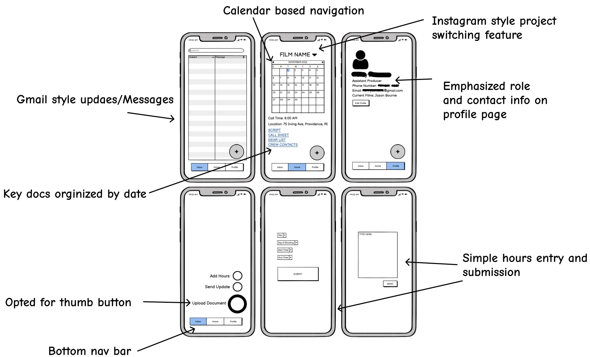
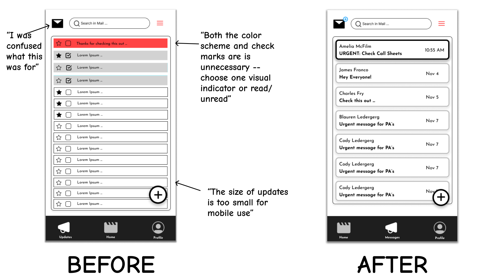
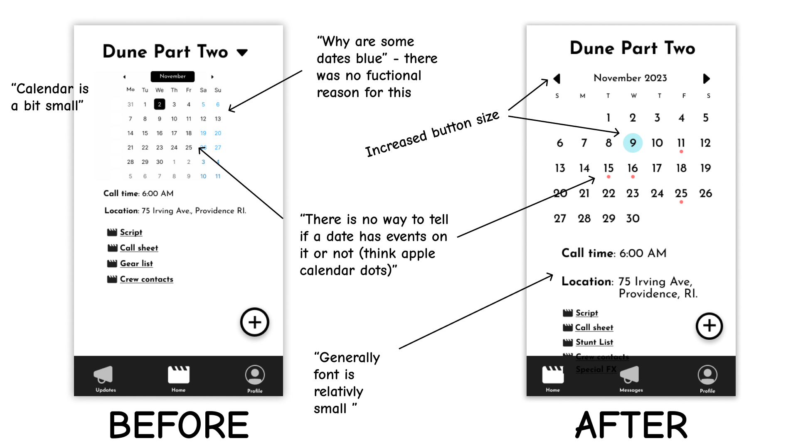
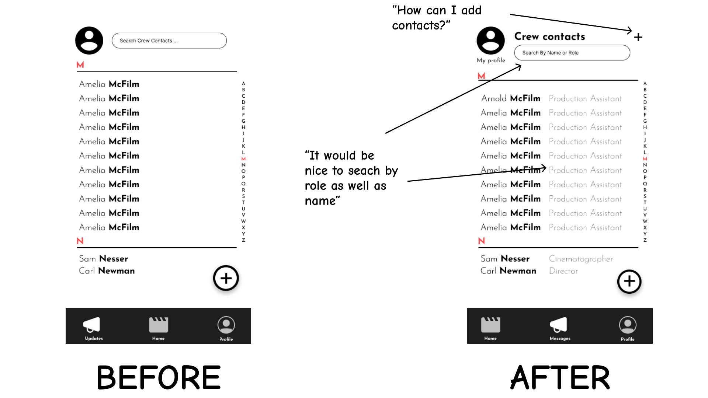
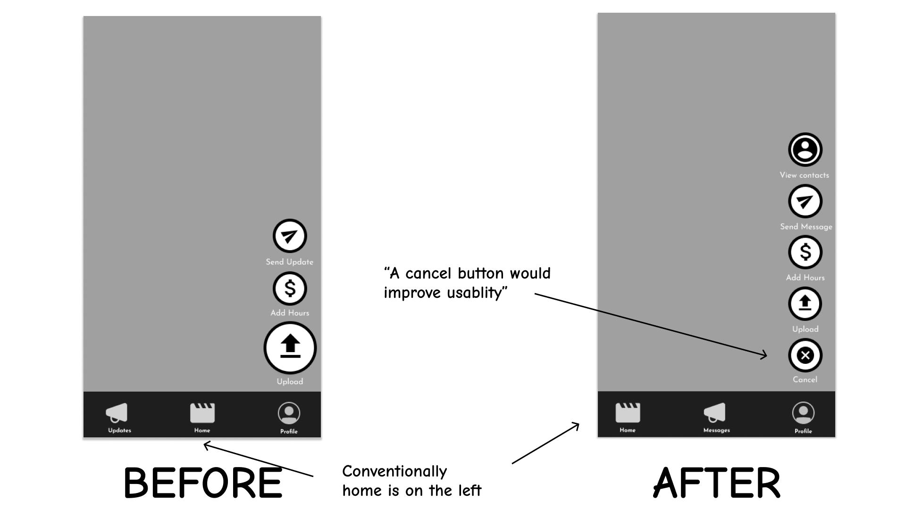
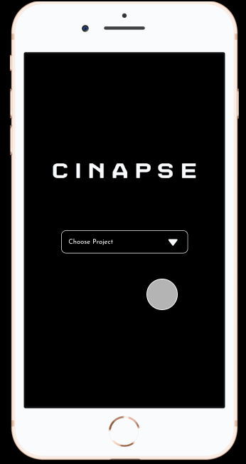

Designing an interactive mobile interface for an emerging startup, Cinapse — without looking at any of their existing materials.
what is this?
Working in a group of four, we chose to design an interactive mobile interface for Cinapse, an app for film and TV crews to manage production documents and daily workflows. The app features calendars for daily and monthly organization, a messaging platform, and a variety of other tools to make life on set easy.
why is it important?
This project helped us practice an interactive design flow process. We went through four steps of a design workflow — first by sketching ideas of the interface, then creating an interactive, high-fi prototype, followed by user testing and implementing feedback before seeing Cinapse our final design.
a bit of context
We heard of Cinapse from a recent YCombinator demo day, and chose to create a design for them because of the interesting concept. We didn't look at any of their existing logos, images or content besides reading about their concept.
sketching out some initial ideas
first take, via lo-fi wireframes
Based on our sketches, we thought about what would make the strongest design for Cinapse. Since movie sets are very time dependent, we opted for a calendar-based approach.

so how can we make this better?
hi-fi prototypes
After finishing our hi-fi prototypes, we presented our work and received feedback from classmates. These before-and-after slides show the changes we made to implement these design suggestions.




final hi-fi design
To the right is our final hi-fi design, and how one user might use the app for work.

now, let's see what other people think!
our usertesting.com instructions:
"Hello, Thank you for taking the time to test our prototype. Please remember that this is not an active website, but a click-through prototype. Not every button will be clickable. By tapping in an empty space, the clickable buttons will be highlighted in blue. The app you will be testing is called Cinapse - it is a mobile application that helps film production crews get information such as scripts, call times, and location changes. For this test, please pretend that you are a production assistant on a film and are checking the app to see if there are any important updates. Your first task will be to check your mail. Thank you again for testing our app! It would be helpful for us if you think aloud - say whatever is on your mind."
our tasks:
1) Make your way through the login page by selecting a film. You will know when to stop once you arrive at the home page with the calendar.
2) Check out the profile page and read your bio to get a sense of the type of user.
3) Check your messages in the app to see if you have any new mail. If there is new mail, open the message and read it carefully. [Success: Yes, No]
4) Follow the instructions offered in the message you just read - go to the home page and find the new location for December 6th. Please talk out loud about your reactions as you complete this step. [Success: Yes, No]
5) Now that you have found your location for December 6th, check out the crew contacts by clicking one of the links at the bottom of the page that says "Crew Contacts."
6) Now for your final task. Please try to send a message to one of the crew members - Amelia McFilm. You do not have to type anything in your message - just click submit. [Success: Yes, No] [5-point rating scale: Very difficult to Very easy]
key takeaways
1) The Calendar was intuitive to navigate for all 3 of the users. We were worried that this may not be intuitive but the added red dots and increased size seems to make the interaction very clear.
2) Two users were confused about where they would check for new messages. This was something that we overlooked and were not expecting. From the testing, it is clear that a red notification with the number of unread messages would make this interaction much.
3) Two users were confused about if the information they were seeing was “updated” or old information. This indicates that it would be helpful to provide some kind of confirmation or highlighting on updated information the first time that a user sees it. This makes a lot of sense but was also not an anticipated problem. In general, users found the interface easy to use. The issues identified did not prevent the users from completing the task, however they created some uncertainty while using the interface.